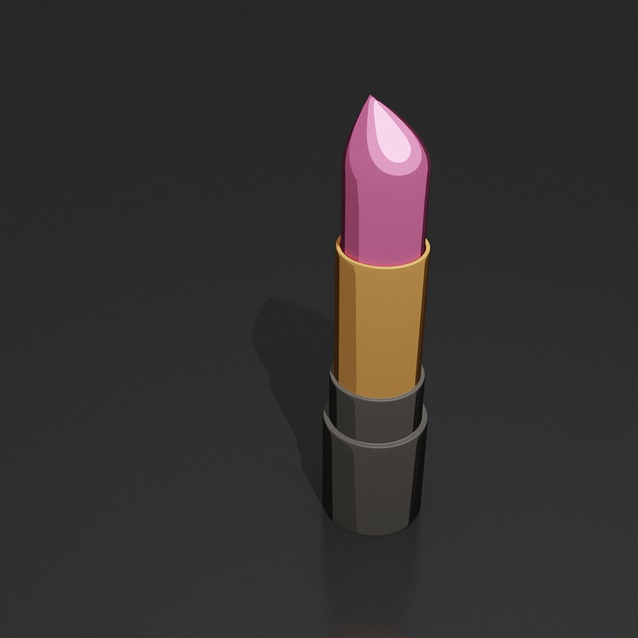

B.A.G.S Adjectives
Beau/Belle
Joli/Jolie
Jeune
Nouveau/Nouvelle
Vieux/Vieille
Bon/Bonne
Gentil/Gentille
Mauvais/Mauvaise
Meiller/Meilleure
Petit/Petite
Grand/Grande
Gros/Grosse
Court/Courte
Haut/Haute
Handsome/Beautiful
Pretty
Young
New
Old
Good
Kind
Bad
Better
Small
Big
Fat
Short
High
Unlike English, most French adjectives come after the subject they are refering to. However, there is one excpetion: B.A.G.S adjectives. B.A.G.S is an acronym that stands for Beauty, Age, Goodness, and Size. Many adjectives that fall into these categories will precede the noun, just like how adjectives work in English. HOWEVER, not all adjectives that fit the category precede the noun. If the adjective is not in this list, very likely it is not actually a B.A.G.S adjective!
